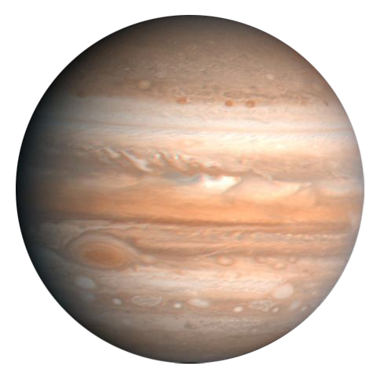
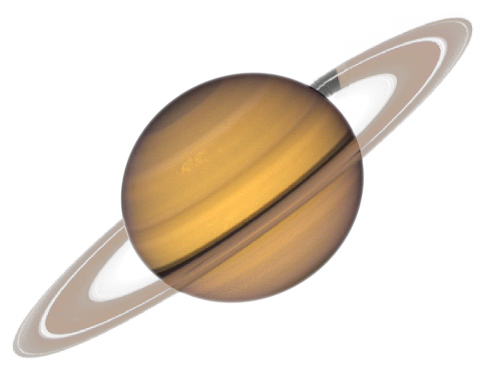
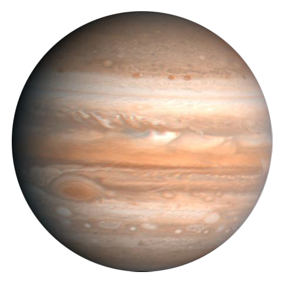
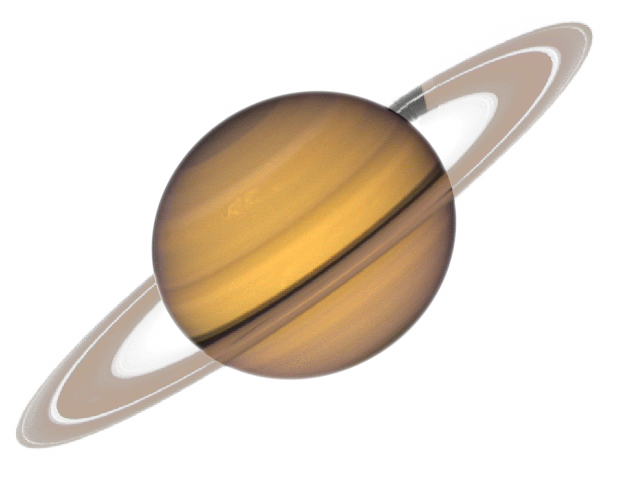
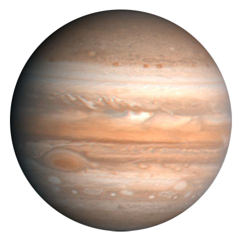
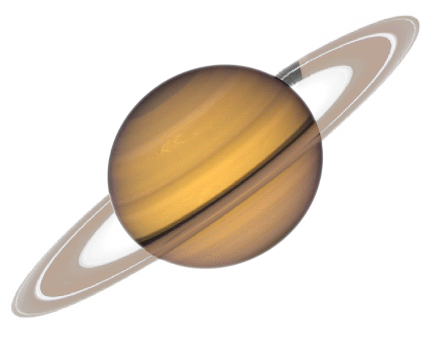
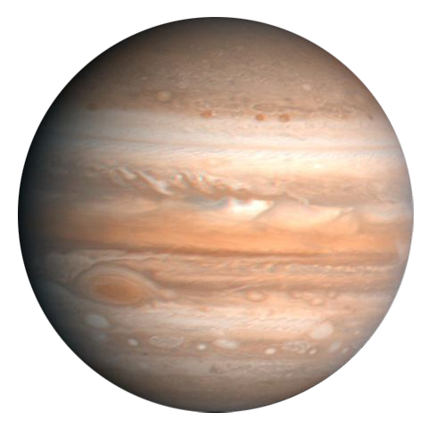
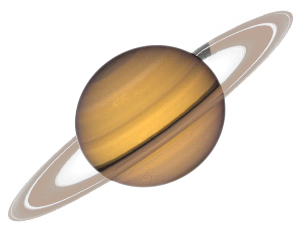

Half the mass of Earth, Mars is a rocky planet with a thin atmosphere. Named after the Roman god of War due to its red hue, this red color is caused by iron oxide in the martian soil. Mars has long excited the imagination due to its earth-like features including mountains, volcanos, valleys, and riverbeds that appear to have been caused by flowing water.
Jupiter is the fifth planet from the Sun and the largest planet in the Solar System. It is a gas giant with mass one-thousandth of that of the Sun but is two and a half times the mass of all the other planets in the Solar System combined. The planet was known by astronomers of ancient times. The Romans named the planet after Jupiter, the king of the gods. When viewed from Earth, Jupiter can reach an apparent magnitude of −2.94, bright enough to cast shadows, and making it on average the third-brightest object in the night sky after the Moon and Venus.
Saturn is the sixth planet from the Sun and the second-largest in the Solar System, after Jupiter. It is a gas giant with an average radius about nine times that of Earth. Although only one-eighth the average density of Earth, with its larger volume Saturn is just over 95 times more massive. Saturn is named after the Roman god of agriculture